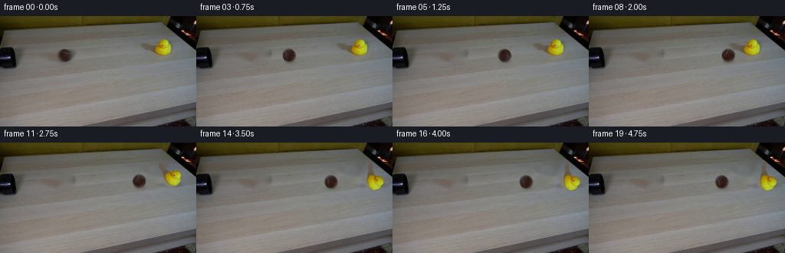
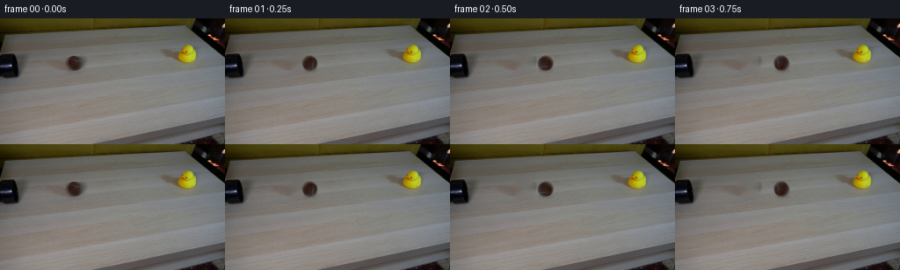

CODING AGENTS AS PIXEL WORLD MODELS
traex/GPT-5.6-Sol · 0007
点击播放 · 原生 RGB 像素
逐轮保存的候选
回放视频、检查图与代码变化。
每份候选均可单独播放。实际图片检查记录在下方工具轨迹中。
候选 01播放与检查图
点击播放 · 原生 RGB 像素


展开代码变化
--- 上一保存版本
+++ 本次保存版本
@@ -0,0 +1,182 @@
+"""Generate the locked-camera ball/duck demonstration from first_frame.png.
+
+The animation deliberately reuses the photographed pixels for both moving
+objects. Only the small areas uncovered by those objects are reconstructed;
+the rest of every frame stays exactly locked to the supplied first frame.
+"""
+
+from pathlib import Path
+
+import cv2
+import numpy as np
+from PIL import Image
+
+import artifact_io
+
+
+ROOT = Path(__file__).resolve().parent
+H, W = 144, 256
+
+
+def smoothstep(lo, hi, x):
+ x = np.clip((x - lo) / (hi - lo), 0.0, 1.0)
+ return x * x * (3.0 - 2.0 * x)
+
+
+def over(dst, rgb, alpha):
+ """Alpha composite RGB over an RGB image, retaining float precision."""
+ a = np.clip(alpha, 0.0, 1.0)[..., None]
+ return dst * (1.0 - a) + rgb * a
+
+
+def soft_ellipse(cx, cy, rx, ry, feather=1.3):
+ yy, xx = np.mgrid[:H, :W]
+ # Signed, approximately pixel-valued distance around an ellipse.
+ q = np.sqrt(((xx - cx) / rx) ** 2 + ((yy - cy) / ry) ** 2)
+ return smoothstep(1.0 + feather / max(rx, ry),
+ 1.0 - feather / max(rx, ry), q).astype(np.float32)
+
+
+def shadow_layer(frame, cx, cy, rx, ry, opacity):
+ """Add a softly blurred contact shadow to frame in-place semantics."""
+ mask = np.zeros((H, W), np.float32)
+ cv2.ellipse(mask, (int(round(cx)), int(round(cy))),
+ (max(1, int(round(rx))), max(1, int(round(ry)))),
+ 0, 0, 360, 1.0, -1, cv2.LINE_AA)
+ mask = cv2.GaussianBlur(mask, (0, 0), 1.45)
+ dark = np.zeros_like(frame) + np.array([39.0, 35.0, 30.0])
+ return over(frame, dark, mask * opacity)
+
+
+def transformed_object(source, alpha, center, angle_deg=0.0, shift=(0.0, 0.0)):
+ """Transform a premultiplied source object without dark edge fringes."""
+ matrix = cv2.getRotationMatrix2D(center, angle_deg, 1.0)
+ matrix[:, 2] += np.asarray(shift, np.float32)
+ a = cv2.warpAffine(alpha, matrix, (W, H), flags=cv2.INTER_CUBIC,
+ borderMode=cv2.BORDER_CONSTANT, borderValue=0)
+ premul = source.astype(np.float32) * alpha[..., None]
+ p = cv2.warpAffine(premul, matrix, (W, H), flags=cv2.INTER_CUBIC,
+ borderMode=cv2.BORDER_CONSTANT, borderValue=0)
+ a = np.clip(a, 0.0, 1.0)
+ rgb = np.zeros_like(p)
+ good = a > 1e-4
+ rgb[good] = p[good] / a[good, None]
+ return np.clip(rgb, 0.0, 255.0), a
+
+
+def make_object_masks(first):
+ """Extract anti-aliased object mattes using geometry and source chroma."""
+ # The ball is an almost circular, photographed cutout at the pipe mouth.
+ ball_alpha = soft_ellipse(84.0, 51.0, 9.0, 9.0, feather=1.15)
+
+ # The duck is the single chromatic connected component in its local box.
+ hsv = cv2.cvtColor(first, cv2.COLOR_RGB2HSV)
+ seed = np.zeros((H, W), np.uint8)
+ local = ((hsv[..., 1] > 34) & (hsv[..., 0] < 52) &
+ (np.max(first, axis=2) > 48))
+ seed[25:59, 180:230] = local[25:59, 180:230].astype(np.uint8)
+ count, labels, stats, _ = cv2.connectedComponentsWithStats(seed, 8)
+ candidates = [i for i in range(1, count) if stats[i, cv2.CC_STAT_AREA] > 20]
+ component = max(candidates, key=lambda i: stats[i, cv2.CC_STAT_AREA])
+ binary = (labels == component).astype(np.uint8)
+ # Filling the external contour retains the low-saturation black eye and
+ # gives the yellow silhouette a clean photographic edge.
+ contours, _ = cv2.findContours(binary, cv2.RETR_EXTERNAL,
+ cv2.CHAIN_APPROX_SIMPLE)
+ filled = np.zeros_like(binary)
+ cv2.drawContours(filled, contours, -1, 255, cv2.FILLED,
+ lineType=cv2.LINE_AA)
+ duck_alpha = cv2.GaussianBlur(filled.astype(np.float32) / 255.0,
+ (0, 0), 0.68)
+ duck_alpha[duck_alpha < 0.015] = 0.0
+ return ball_alpha, np.clip(duck_alpha, 0.0, 1.0)
+
+
+def clean_background(first, ball_alpha, duck_alpha):
+ """Reconstruct the tiny patches revealed as the objects move."""
+ ball_remove = (cv2.dilate((ball_alpha > 0.03).astype(np.uint8),
+ np.ones((5, 5), np.uint8)) * 255)
+ duck_remove = cv2.dilate((duck_alpha > 0.02).astype(np.uint8),
+ np.ones((7, 7), np.uint8))
+ # Also clear the original compact contact shadow under the duck.
+ cv2.ellipse(duck_remove, (211, 53), (17, 5), 0, 0, 360, 1, -1)
+ duck_remove = (duck_remove * 255).astype(np.uint8)
+
+ no_ball = cv2.inpaint(first, ball_remove, 4.0, cv2.INPAINT_TELEA)
+ both = cv2.bitwise_or(ball_remove, duck_remove)
+ no_objects = cv2.inpaint(first, both, 4.5, cv2.INPAINT_TELEA)
+
+ # Inpainting is intentionally limited to the exact revealed patches.
+ return no_ball, no_objects
+
+
+def generate_frames():
+ first = np.asarray(Image.open(ROOT / "first_frame.png").convert("RGB"),
+ dtype=np.uint8)
+ if first.shape != (H, W, 3):
+ raise ValueError(f"Unexpected first frame shape: {first.shape}")
+
+ ball_alpha, duck_alpha = make_object_masks(first)
+ no_ball, no_objects = clean_background(first, ball_alpha, duck_alpha)
+
+ # Measured image-space trajectory. The ball travels at nearly constant
+ # speed from the pipe, transfers momentum at frame 9, and makes a short,
+ # damped recoil while the light rubber duck topples in the impact direction.
+ ball_x = np.array([
+ 84.0, 96.0, 108.3, 120.8, 133.3, 145.8, 158.2, 170.5,
+ 181.6, 188.8, 184.7, 181.2, 178.6, 176.8, 175.5, 174.6,
+ 174.0, 173.6, 173.4, 173.3,
+ ], np.float32)
+ # Small compliant bounce at collision, settling back onto the tabletop.
+ ball_y = np.array([
+ 51, 51, 51, 51, 51, 51, 51, 51, 50.9, 50.4,
+ 49.6, 50.0, 50.5, 50.8, 51, 51, 51, 51, 51, 51,
+ ], np.float32)
+ duck_angle = np.array([
+ 0, 0, 0, 0, 0, 0, 0, 0, 0, 7, 20, 39, 59, 73,
+ 68, 72, 69.5, 71.0, 70.2, 70.5,
+ ], np.float32)
+
+ frames = [first.copy()]
+ for index in range(1, 20):
+ impacted = index >= 9
+ frame = (no_objects if impacted else no_ball).astype(np.float32)
+
+ # From impact onward the original duck is removed, then laid back in
+ # with a physically expanding ground shadow as it tips clockwise.
+ if impacted:
+ angle = float(duck_angle[index])
+ slide = min(10.6, angle * 0.15)
+ frame = shadow_layer(frame,
+ 211.0 + slide + angle * 0.11,
+ 54.3 + min(1.4, angle * 0.018),
+ 11.0 + angle * 0.17, 2.1, 0.23)
+ duck_rgb, da = transformed_object(
+ first, duck_alpha, center=(211.0, 53.0),
+ angle_deg=-angle, shift=(slide, 0.4 + angle * 0.010))
+ frame = over(frame, duck_rgb, da)
+
+ # Contact shadow follows the sphere but does not rotate with it.
+ bx, by = float(ball_x[index]), float(ball_y[index])
+ frame = shadow_layer(frame, bx + 0.8, by + 8.3, 8.0, 1.6, 0.20)
+
+ # Rolling angle follows arc length (clockwise for rightward travel).
+ # After the elastic recoil, the sign naturally reverses.
+ travel = bx - 84.0
+ angle = -np.degrees(travel / 8.6)
+ ball_rgb, ba = transformed_object(
+ first, ball_alpha, center=(84.0, 51.0), angle_deg=float(angle),
+ shift=(bx - 84.0, by - 51.0))
+ frame = over(frame, ball_rgb, ba)
+ frames.append(np.clip(np.rint(frame), 0, 255).astype(np.uint8))
+
+ result = np.stack(frames, axis=0)
+ # Explicit contract checks, including exact preservation of source frame.
+ assert result.shape == (20, H, W, 3)
+ assert result.dtype == np.uint8
+ assert np.array_equal(result[0], first)
+ return result
+
+
+if __name__ == "__main__":
+ artifact_io.save(generate_frames(), ROOT)
可观测工具轨迹
实际执行的命令与返回图片。
命令 1exit 0
/bin/bash -lc "cat prompt.txt && printf '\\n--- GENERATION RULES ---\\n' && cat GENERATION_RULES.md"
命令 2exit 1
/bin/bash -lc "find . -maxdepth 2 -type f -printf '%p\\n' | sort && printf '\\n--- tools ---\\n' && command -v ffmpeg && command -v ffprobe && python3 - <<'PY'
from PIL import Image
im=Image.open('first_frame.png')
print(im.mode, im.size)
PY"命令 3exit 0
/bin/bash -lc "python3 - <<'PY'
from PIL import Image
import numpy as np
im=np.array(Image.open('first_frame.png').convert('RGB'))
print('shape/dtype/ranges:', im.shape, im.dtype, im.reshape(-1,3).min(0), im.reshape(-1,3).max(0))
# coarse block mean grid, quantized into nearest representative labels from kmeans
from sklearn.cluster import KMeans
X=im.reshape(-1,3)
km=KMeans(n_clusters=12,random_state=0,n_init=5).fit(X[::4])
C=np.rint(km.cluster_centers_).astype(int)
print('centers:')
for i,c in enumerate(C): print(i,c, int(np.sum(km.predict(X)==i)))
lab=km.predict(X).reshape(im.shape[:2])
# majority in 8x8 blocks, characters cluster IDs
chars='0123456789AB'
for y in range(0,144,8):
print(''.join(chars[np.bincount(lab[y:y+8,x:x+8].ravel(),minlength=12).argmax()] for x in range(0,256,8)))
# hue masks component bboxes
import cv2
hsv=cv2.cvtColor(im,cv2.COLOR_RGB2HSV)
masks={
'dark':(np.max(im,2)<65),
'yellow':((hsv[:,:,0]>=18)&(hsv[:,:,0]<=42)&(hsv[:,:,1]>100)&(hsv[:,:,2]>80)),
'brown':((hsv[:,:,0]>=3)&(hsv[:,:,0]<=18)&(hsv[:,:,1]>65)&(hsv[:,:,2]>35)),
'beige':((hsv[:,:,0]>=5)&(hsv[:,:,0]<=30)&(hsv[:,:,1]>15)&(hsv[:,:,1]<115)&(hsv[:,:,2]>100)),
}
for name,m in masks.items():
n,cc,st,cent=cv2.connectedComponentsWithStats(m.astype('uint8'))
print('\\n',name,'pixels',m.sum())
ids=sorted(range(1,n),key=lambda i:st[i,4],reverse=True)[:12]
for i in ids: print(st[i].tolist(),np.round(cent[i],1).tolist())
PY"命令 4exit 0
/bin/bash -lc 'cat artifact_io.py'
命令 5exit 0
/bin/bash -lc "python3 - <<'PY'
from PIL import Image
import numpy as np, cv2
im=np.array(Image.open('first_frame.png').convert('RGB'))
# detailed 2px cell segmentation around action, using custom color symbols based on HSV/luminance
hsv=cv2.cvtColor(im,cv2.COLOR_RGB2HSV); Y=np.mean(im,2)
def char_region(a):
r,g,b=a.reshape(-1,3).mean(0); mx=max(r,g,b); mn=min(r,g,b); v=(r+g+b)/3
if v<30:return '#'
if v<55:return 'K'
if r>g*1.35 and r>b*1.5:return 'r' # brown
if r>1.4*b and g>1.25*b:
if g>1.15*r:return 'Y'
if r>1.15*g:return 'o'
return 'y'
if mx-mn<12:
return '.:-=+'[min(4,int(v)//45)]
if r>b*1.18 and g>b*1.12:return 't' # warm table
return 'x'
print('2px map x=0..230 y=28..66')
for y in range(28,68,2):
print(f'{y:03d} '+''.join(char_region(im[y:y+2,x:x+2]) for x in range(0,232,2)))
# row transitions/runs cluster labels for selected rows
from sklearn.cluster import KMeans
X=im.reshape(-1,3)
km=KMeans(n_clusters=16,random_state=1,n_init=10).fit(X)
L=km.labels_.reshape(144,256); C=km.cluster_centers_
print('centers',np.rint(C).astype(int).tolist())
for y in [35,40,43,45,48,50,52,55,58,60,65,70,80,100,120,140]:
runs=[]; st=0; old=L[y,0]
for x in range(1,256):
if L[y,x]"'!=old:
if x-st>=3:runs.append((st,x-1,int(old)))
st=x;old=L[y,x]
if 256-st>=3:runs.append((st,255,int(old)))
print(y,runs)
PY'命令 6exit 1
/bin/bash -lc "python3 - <<'PY'
from PIL import Image
import numpy as np
im=np.array(Image.open('first_frame.png').convert('RGB'))
# average RGB for 4x2 blocks crop 0:100 y30:65, symbolize exact luminance and hue
for y in range(30,66,2):
print('\\ny',y)
for x in range(0,100,4):
a=im[y:y+2,x:x+4].reshape(-1,3); m=np.rint(a.mean(0)).astype(int)
print(f'{x:02}:{m[0]:03}/{m[1]:03}/{m[2]:03}',end=' ')
print()
# Sobel edge ascii crop 0:105 y25:70 each pixel sampled
import cv2
G=cv2.cvtColor(im,cv2.COLOR_RGB2GRAY)
E=cv2.magnitude(cv2.Sobel(G,cv2.CV_32F,1,0),cv2.Sobel(G,cv2.CV_32F,0,1))
for y in range(25,70):
print(''.join(' #'[E[y,x]>100] if E[y,x]>100 else ('+' if E[y,x]>50 else ' ') for x in range(0,105)))
PY"命令 7exit 0
/bin/bash -lc "python3 - <<'PY'
from PIL import Image
import numpy as np, cv2
im=np.array(Image.open('first_frame.png').convert('RGB'))
# print duck crop each pixel categorized by hand conditions
for y in range(25,61):
s=''
for x in range(185,235):
r,g,b=map(int,im[y,x]); v=(r+g+b)/3
if max(r,g,b)<35:c='#'
elif max(r,g,b)<65:c='k'
elif r>g*1.35 and r>b*1.6 and r>70:c='O'
elif r>1.25*b and g>1.35*b and max(r,g)>90:
c='Y' if g>=r*.85 else 'y'
elif max(r,g,b)-min(r,g,b)<18:c='.'
elif r>b*1.16 and g>b*1.1:c='t'
else:c=' '
s+=c
print(f'{y:03d} {s}')
print('\\nRGB matrix duck crop x195:226 y27:56')
for y in range(27,56):
print(y, ' '.join('%02x%02x%02x'%tuple(im[y,x]) for x in range(195,226)))
PY"命令 8exit 0
/bin/bash -lc "python3 - <<'PY'
from PIL import Image
import numpy as np, cv2
im=np.array(Image.open('first_frame.png').convert('RGB'))
for y in range(39,64):
s=''
for x in range(70,100):
r,g,b=map(int,im[y,x]); mx=max(r,g,b); mn=min(r,g,b)
if mx<25:c='#'
elif mx<50:c='K'
elif r>g*1.3 and r>b*1.4:c='B'
elif r>b*1.12 and g>b*1.03 and r-g>3:c='b'
elif mx-mn<10:c='.'
else:c=' '
s+=c
print(f'{y:03d} {s}')
print('RGB')
for y in range(42,61):
print(y,' '.join('%02x%02x%02x'%tuple(im[y,x]) for x in range(74,95)))
PY"命令 9exit 0
/bin/bash -lc "python3 - <<'PY'
import cv2,numpy as np
from PIL import Image
im=np.array(Image.open('first_frame.png').convert('RGB')); hsv=cv2.cvtColor(im,cv2.COLOR_RGB2HSV)
for s in [35,45,55,65,80,100]:
m=np.zeros(im.shape[:2],np.uint8); roi=(hsv[:,:,1]>s)&(hsv[:,:,0]<50)&(hsv[:,:,2]>45); m[25:58,185:230]=roi[25:58,185:230]
n,L,st,c=cv2.connectedComponentsWithStats(m)
ids=sorted(range(1,n),key=lambda i:st[i,4],reverse=True)
print('S',s, [(st[i].tolist(),c[i].round(1).tolist()) for i in ids[:5]])
PY"命令 10exit 0
/bin/bash -lc "python3 generate.py && python3 - <<'PY'
import numpy as np
from PIL import Image
p=np.load('pixels.npz')['pixels']
first=np.array(Image.open('first_frame.png').convert('RGB'))
frames=np.stack([np.array(Image.open(f'frames/{i:02d}.png')) for i in range(20)])
print('pixels tensor',p.shape,p.dtype)
print('frames',frames.shape,frames.dtype,'frame0 exact',np.array_equal(frames[0],first))
print('changed pixels vs first:',[int(np.any(f"'!=first,2).sum()) for f in frames])
print('"'successive changed:',[int(np.any(frames[i]"'!=frames[i-1],2).sum()) for i in range(1,20)])
print('"'outputs:')
import os
for x in ['pixels.npz','inspection.png','transition_check.png','index.html']:
print(x,os.path.getsize(x))
PY"命令 11exit 0
/bin/bash -lc "python3 -m py_compile generate.py && sha256sum pixels.npz frames/00.png > .tmp/hashes_before.txt && python3 generate.py && sha256sum pixels.npz frames/00.png > .tmp/hashes_after.txt && diff -u .tmp/hashes_before.txt .tmp/hashes_after.txt && python3 - <<'PY'
from pathlib import Path
import numpy as np
from PIL import Image
src=np.asarray(Image.open('first_frame.png').convert('RGB'))
fs=np.stack([np.asarray(Image.open(f'frames/{i:02d}.png').convert('RGB')) for i in range(20)])
packed=np.load('pixels.npz')['pixels']
recon=np.stack([((packed>>16)&255),((packed>>8)&255),(packed&255)],axis=-1).transpose(2,0,1,3).astype(np.uint8)
assert fs.shape==(20,144,256,3) and fs.dtype==np.uint8
assert np.array_equal(fs[0],src)
assert np.array_equal(fs,recon)
assert len(list(Path('frames').glob('*.png')))==20
print('ALL_CONTRACT_CHECKS_PASSED')
print('frame00_sha256:',__import__('hashlib').sha256(Path('frames/00.png').read_bytes()).hexdigest())
print('rgb_minmax:',int(fs.min()),int(fs.max()))
PY"保存候选 1 份；完成命令 11 次；可验证图片返回 0 张。原始 API 响应与完整日志保留在本地。